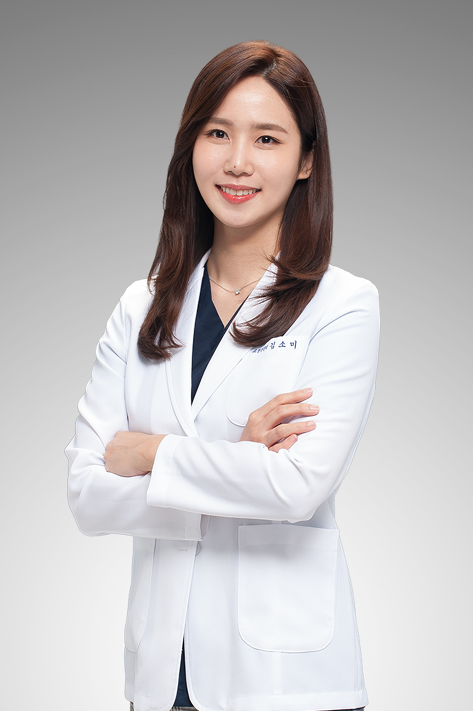

- Trustfull
- Fast
- Accurate
- Happy
- Trustfull
서울리뉴치과
안녕하세요. 먼 곳에서도 리뉴치과까지 찾아와주시는 환자분들께 감사드립니다.
그 동안 치과 진료 때문에 스트레스 받았다면 수면 마취를 통해서 편하게 진료 받으 실 수 있습니다. 치과공포나 치과진료에 트라우마 있다면, 원장님의 친절하고 자세한 설명과 함께 수면마취를 하면 이전보다 편하게 진료 받으 실 수 있습니다.
상악동 거상술을 동반하면서 뼈이식을 많이 해야 하는 임플란트 때문에 대학병원을 가라고 이야기 들으 셨거나 진료 거절을 받으셨다면 걱정 마시고 오시면 됩니다. 10000 케이스 이상의 고난이도 임플란트 증례를 통해서 실력이 입증된 서울대학교 치과병원 출신 구강악안면외과 전문의 원장님의 진료를 받으 실 수 있습니다.
고혈압이나 당뇨 같은 성인병을 가지고 계시거나 뇌졸중이나 심장 스텐트 같은 혈관 질환을 가지고 계서서 치과 진료를 받으시기 힘드셨다면 걱정 안하 셔도 됩니다. 일반 치과의사 보다 환자의 전신적인 건강 상태에 대해서 많이 배우고 경험 많은 구강악안면외과 전문의가 집도하는 병원입니다.
교정과 전문의가 상주하는 치과병원입니다. 교정치료는 진료 기간이 최소 1~2년이 걸리기 때문에 진료 도중에 교정과 치과의사가 바뀌는 경우가 생깁니다. 하지만 저희 병원은 교정과 의사가 변경 되지 않는 병원 입니다.
아무리 실력과 학벌이 좋아도 환자와 의사 사이에 라포가 형성되지 않으면 정말 좋은 진료를 해도 환자는 만족하지 못하고 결국 좋은 치료가 될 수 없습니다. 반대로 교과서적으로는 좋지 않은 치료를 하는 치과의사들이 있는데 환자는 오히려 만족으로 하고 주변에 추천을 하는 것을 보면 여태 치료를 학문으로만 봤던 제 자신을 돌아보게 됩니다. 결국 질환만 두고 보면 학문일 수 있지만 질환을 가지고 있는 사람도 보아야 한다고 생각 합니다.
가끔 상담실장님들 중에서 컴퓨터에 x ray만 띄워 놓고 진단을 내리고 계획을 세워 달라고 말하는 사람들이 있습니다. 사진만 보고 진단 내리고 계획 세우는 일은 누구든지 조금만 해보면 쉽게 할 수 있습니다. 하지만 저는 실장님들이 대략적인 계획을 세우고 와서 사진만 보고 진단을 내려 달라고 해도 말해주지 않습니다. 환자의 성격과 경제적 상태 그리고 성향에 따라서 치료 계획은 바뀌기 때문입니다. 그리고 이런 이야기를 실제로 환자들께 말씀 드립니다. 죽어도 치아를 안 뽑겠다고 하는 성향의 환자분들이라면 저도 안뽑고 최대한 써보자고 말씀 드리지요. 하지만 합리적이고 논리적인 대화가 가능한 분들은 몇년 안에 망가질 치아들은 임플란트를 하고 괜찮은 치아들은 살리는 방향으로 계획을 세워 드립니다. 환자분들 오셨을때 개개인의 맞춤형 계획을 세우기 위해서 매일 고민하는 원장이 진료를 보는 치과라면 환자분도 치료가 끝나고 이 치과에 잘 왔다고 생각 하시지 않을까요.
의료진소개
타협하지 않는 실력. 정직. 정확함.
김소미
교정과대표원장
당신의 미소를 새롭게 디자인 합니다.
- 경기과학고등학교 졸업
- 서울대학교 생명과학부 최우등 졸업
- 서울대학교 치의학과 최우등 졸업
- 서울대학교 치의학대학원 석사
- 서울대학교 치과병원 인턴
- 서울아산병원 치과교정과 레지던트
- 보건복지부 인증 치과교정과 전문의
- 보건복지부 인증 통합치의학과 전문의
- 대한치과교정학회 인정의
- 대한치과교정학회 정회원
박상헌
구강외과대표원장
- 구강악안면외과 전문의
- 통합치의학과 전문의
- 서울대학교 졸업
- 서울대학교 치의학과 졸업
- 서울대학교 치의학대학원 석사
- 서울대학교 치의학대학원 박사 수료
- 서울대학교 치과병원 인턴
- 서울대학교 치과병원 구강악안면외과 레지던트
- 대한악안면성형재건외과학회 인정의
- 대한악안면성형재건외과학회 정회원
- 대한구강악안면외과 학회 정회원
- 미국 심장협회(AHA) Basic life Support(BLS) instructor
진료과목
PROCEDURE
-
임플란트
-
사랑니 발치
-
턱관절 질환
-
보철 치료
-
수면 마취
진료시간
TIME
일부 국경일은 휴진
점심시간 1시 ~ 2시
토, 일은 점심시간 없이 진료합니다.
상담
CONTACT
- Tel.
- 02 456 7890
- ...@gmail.com
- Location
- 서울시 관악구 관악로 184